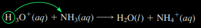

We can state the Arrhenius concept of an acid as follows:
An acid is a substance that, when dissolved in water, increases the concentration of hydronium ion, \(\text{H}_3\text{O}^+\) (aq)
For simplicity, chemists frequently use the notation \(\text{H}^+\) (aq)
A base, in the Arrhenius concept, is a substance that, when dissolved in water, increases the concentration of hydroxide ion, \(\text{OH}^-\) (aq)
The special role of the hydronium ion (or hydrogen ion) and the hydroxide ion in aqueous solutions arises from the following reaction
\( \ce{H2O(l) + H2O(l) <=> H3O^+ (aq) + OH^- (aq)} \)
In Arrhenius’s theory, a strong acid is a substance that completely ionizes in aqueous solution to give \(\text{H}_3\text{O}^+\)(aq) and an anion. An example is the perchloric acid \(\text{HClO}_4\)
\(\ce{HClO4(aq) + H2O(l) \rightarrow H3O^+(aq) + ClO4^-(aq)}\)
Other examples are: \(\text{HCl},\: \text{HBr}, \: \text{HNO}_3, \: \text{HI}\)
A strong base completely ionizes in aqueous solution to give \(\text{OH}^-\)and a cation. Sodium hydroxide is an example of a strong base
\(\ce{NaOH(s) + H2O \rightarrow Na^+(aq) + OH^-(aq)}\)
According to the Brønsted–Lowry concept, an acid is the species donating a proton in a proton-transfer reaction. A base is the species accepting the proton in a proton-transfer reaction
Consider, for example, the reaction of hydrochloric acid with ammonia, which was mentioned in the chapter opening. Writing it as an ionic equation, you have
You obtain the net ionic equation:
In this reaction in aqueous solution, a proton, \(\text{H}^+\), is transferred from the \(\text{H}_3\text{O}^+\) ion to the \(\text{NH}_3\) molecule, giving \(\text{H}_2\text{O}\) and \(\text{NH}_4\)
Here \(\text{H}_3\text{O}^+\) is the proton donor, or acid, and \(\text{NH}_3\) s the proton acceptor, or base. Note that in the Brønsted–Lowry concept, acids (and bases) can be ions as well as molecular substances.
A conjugate acid–base pair** consists of two species in an acid–base reaction, one acid and onebase, that differ by the loss or gain of a proton. The acid in such a pair is called the conjugate acid of the base, whereas the base is the conjugate base of the acid
The Brønsted–Lowry concept defines a species as an acid or a base according to its function in the acid–base, or proton-transfer, reaction. Some species can act as either an acid or a base. An amphiprotic species is a species that can act as either an acid or a base (it can lose or gain a proton), depending on the other reactant.
A Lewis acid is a species that can form a covalent bond by accepting an electron pair from another species.
A Lewis base is a species that can form a covalent bond by donating an electron pair to another species.
Example: Let us look at the reaction of \(\text{Na}_2\text{O}\) with \(\text{SO}_3\). It involves the reaction of the oxide ion, \(\text{O}^{2-}\), from the ionic solid, \(\text{Na}_2\text{O}\), with \(\text{SO}_3\).
Here \(\text{SO}_3\) accepts the electron pair from the \(\text{O}^{2-}\) ion. At the same time, an electron pair from the \(\text{S=O}\) bond moves to the O atom. Thus, \(\text{O}^{2-}\) is the Lewis base and \(\text{SO}_3\) is the Lewis acid.
Written by Fillios Memtsoudis